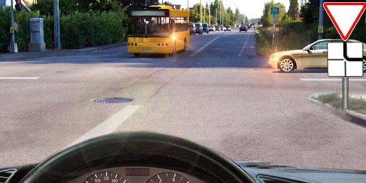
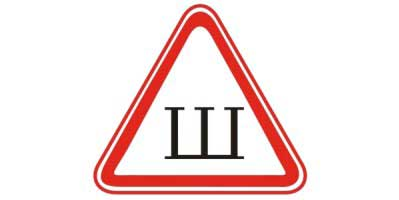
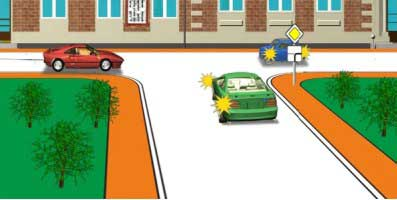
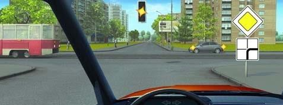
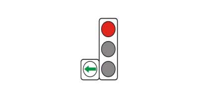
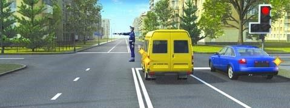
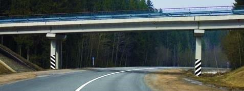
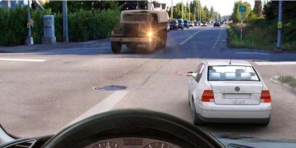
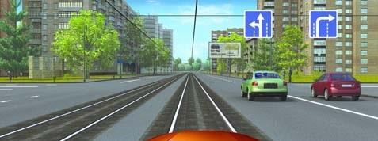
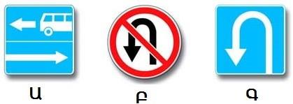

Թեստ 46
30:00
1. "Ճանապարհային երթևեկության անվտանգության ապահովման մասին" ՀՀ օրենքի համաձայն՝ ընդհանուր օգտագործման տրանսպորտային միջոց է համարվում՝
2. «Ճանապարհային երթևեկության անվտանգության ապահովման մասին» ՀՀ օրենքի համաձայն` «B», «C» և «D» կարգերի տրանսպորտային միջոցներ վարելու իրավունքի վկայական ունեցող անձանց թույլատրվում է դրանք վարել նաև կցորդներով, եթե կցորդի թույլատրելի առավելագույն զանգվածը չի գերազանցում`
3. Տրանսպորտային միջոցների շահագործումն արգելվում է, եթե՝
4. Տրանսպորտային միջոցների շահագործումն արգելվում է, եթե`
5. Եթե մտադիր եք շարունակել երթևեկությունն ուղիղ, ո՞ր տրանսպորտային միջոցին պետք է զիջել ճանապարհը։

6. Ի՞նչ է նշանակում այս ճանաչման նշանը:

7. Խաչմերուկն առաջինը կանցնի`

8. Ո՞ր դեպքում է արգելվում քարշակումը:
9. Նշվածներից ո՞ր ուղղությունն է թույլատրելի
10. Լուսացույցի դեղին թարթող ազդանշանի պայմաններում խաչմերուկն ուղիղ անցնելիս պարտավոր ենք

11. Պարտավո՞ր է արդյոք տրամվայի վարորդը լուսացույցի կանաչ ազդանշանի դեպքում զիջել ճանապարհն այլ ուղղություններից մոտեցող տրանսպորտային միջոցներին:

12. Վարորդը որտեղ պետք է կանգնեցնի տրանսպորտային միջոցն այս գծանշման առկայության դեպքում:
13. Կապույտ և կարմիր գույների առկայծող փարոսիկներ և հատուկ ձայնային ազդանշան միացրած տրանսպորտային միջոց մոտենալու դեպքում վարորդները պետք է`
14. Ո՞ր վարորդը կարող է շարունակել երթևեկությունը

15. Այս ուղղաձիգ գծանշմամբ

16. Ի՞նչի մասին է տեղեկացնում մոտոցիկլի վարորդը
17. Ինչի՞ մասին է տեղեկացնում թեթև մարդատար ավտոմոբիլի վարորդի կողմից ձեռքով տրված ազդանշանը:

18. Տվյալ իրավիճակում թու՞յլատրվում է վարորոդին երթևեկությունը տրամվայի գծերով

19. Նշաններից, որն է արգելում ձախ շրջադարձ կատարել
